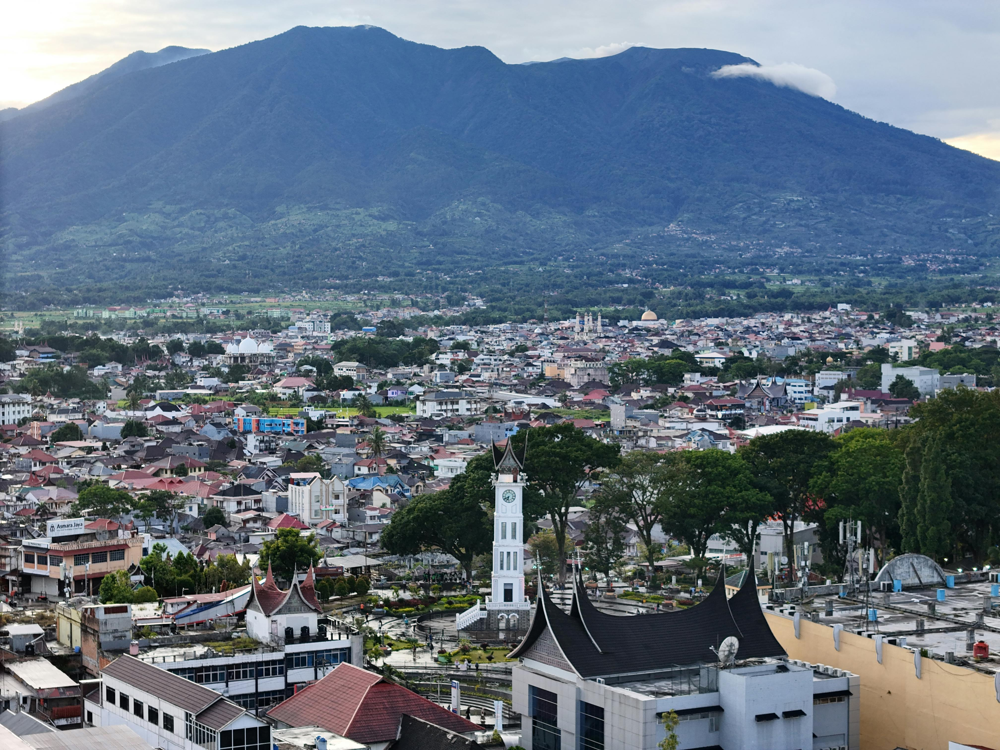

インドネシア語はどう生まれた？
歴史・特徴・発展をわかりやすく解説
インドネシア語（Bahasa Indonesia）は、現在インドネシア全土で使われている公用語です。
しかし、インドネシアには700以上の言語が存在しており、もともと全員が同じ言語を話していたわけではありません。
では、なぜ「インドネシア語」が国の言語として広まったのでしょうか？
この記事では、インドネシア語の成り立ちや歴史、そして現在の姿までをわかりやすく解説します。

① インドネシア語のもとになった言語
マレー語が起源
インドネシア語のベースになったのは「マレー語（Bahasa Melayu）」です。
昔から東南アジアでは貿易が盛んで、多くの商人が異なる地域を行き来していました。
その中で、異なる民族同士でも通じやすかったマレー語が「共通語」として広まっていきました。
・中国人商人
・アラブ商人
・インド商人
・現地の人々
特に港町では、多くの民族が交流しており、マレー語はコミュニケーションの中心となっていました。
② なぜジャワ語ではなくマレー語だったの？
インドネシアで最も話者が多いのはジャワ語です。
それにもかかわらず、公用語にはマレー語系のインドネシア語が選ばれました。
理由1：シンプルで学びやすかった
マレー語は文法が比較的簡単で、
・動詞活用が少ない
・性別変化がない
・時制変化が少ない
など、多民族国家で使いやすい言語でした。
理由2：特定民族の優位を避けた
もしジャワ語を国語にすると、ジャワ民族だけが強い立場になってしまう可能性がありました。
そのため、比較的中立的だったマレー語が採用されたのです。
③ 「インドネシア語」が誕生した瞬間
青年の誓い（Sumpah Pemuda）
1928年、インドネシア独立運動の中で有名な「青年の誓い」が行われました。
そこで若者たちは、
・一つの祖国
・一つの民族
・一つの言語
を掲げ、「インドネシア語」を民族共通語として使うことを宣言しました。
ここが、現在のインドネシア語誕生の大きな転機とされています。
④ オランダ統治の影響
インドネシアは長い間、オランダの植民地でした。
そのため、インドネシア語にはオランダ語由来の単語が多く存在します。
kantor（オフィス）
polisi（警察）
gratis（無料）
現在でも、法律・教育・行政分野にはオランダ語の影響が残っています。
⑤ 他の言語からの影響
サンスクリット語
昔のインド文化の影響を受けています。
bahasa（言語）
manusia（人間）
アラビア語
イスラム教の広まりによる影響です。
kitab（本）
selamat（平和・安全）
英語
現代では英語由来の単語も急増しています。
internet
komputer
akses
⑥ 現代のインドネシア語
現在のインドネシア語は、
・学校教育
・SNS
・テレビ
・YouTube
などを通して変化し続けています。
若者言葉や略語も非常に多く、
gak（tidak）
nggak
makasih（terima kasih）
など、カジュアル表現も日常的に使われています。
⑦ インドネシア語の面白い特徴
発音が比較的簡単
ローマ字読みが基本なので、日本人にとって読みやすい言語です。
文法がシンプル
英語のような複雑な時制変化が少なく、初心者でも学びやすいです。
接辞が重要
me-, ber-, di-, pe- などの接辞によって意味が変化します。
baca（読む）
membaca（読む）
dibaca（読まれる）
pembaca（読者）
理解度チェッククイズ
記事の内容をクイズで確認してみましょう！
Q1. インドネシア語のもとになった言語は？
A. ジャワ語
B. マレー語
C. タイ語
答え：B（マレー語）
Q2. 1928年の有名な宣言は？
A. 青年の誓い
B. 独立宣言
C. 憲法宣言
答え：A（青年の誓い）
Q3. インドネシア語に影響を与えていないものは？
A. アラビア語
B. サンスクリット語
C. ロシア語
答え：C（ロシア語）
Q4. 「makasih」は何の略？
A. terima kasih
B. selamat pagi
C. apa kabar
答え：A（terima kasih）
まとめ
インドネシア語は、単なる「一つの民族の言語」ではなく、多民族国家をつなぐために発展した特別な言語です。
マレー語を基盤にしながら、
・オランダ語
・アラビア語
・サンスクリット語
・英語
など、多くの文化の影響を受けて現在の形になりました。
歴史を知ることで、インドネシア語学習もさらに面白く感じられるはずです。